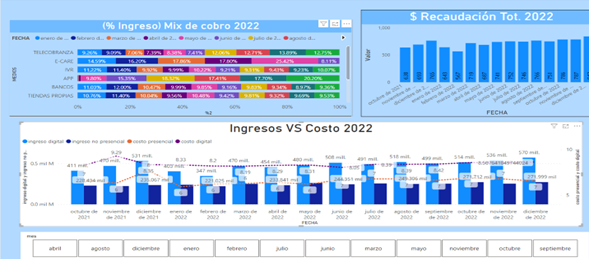

Telefónica Movistar – BI Dashboard
Purpose: Provide financial visibility across billing, collections and AR.
KPIs: Aging buckets, recovery rate, outstanding balance.
DAX: Time intelligence, cumulative collections, delinquency ratios.
Impact: Improved executive decision-making and operational follow-up.
